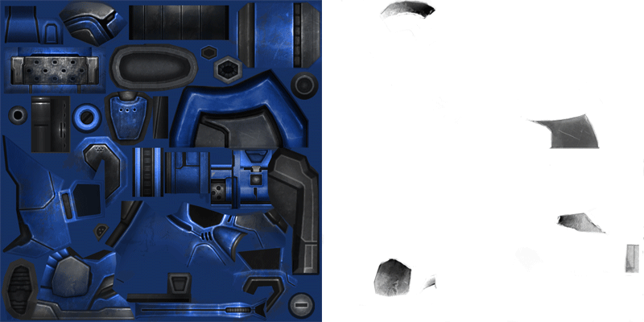
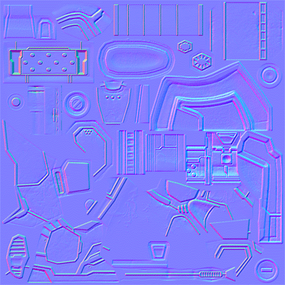
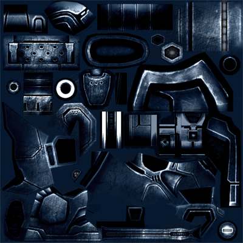
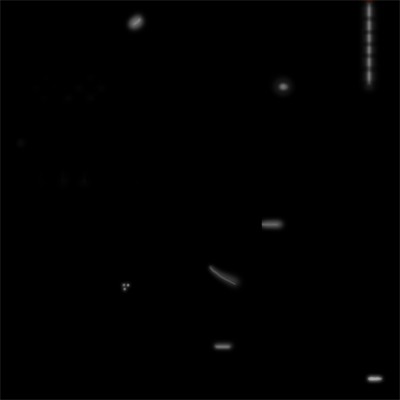
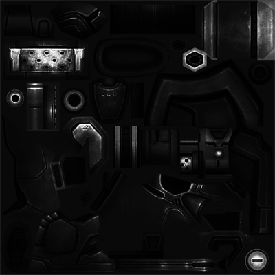

Appendix: Waterbat Texture Setup
This is a listing of the various types of textures used by the Waterbat tutorial files. This setup is common amongst most of the Multiplayer Units in StarCraft II, with slight variation as required by the particular model. This is a detailed description of the textures provided with Waterbat.
Waterbat_Diff.tga (RGBA DXT5)
The Diffuse texture stores diffuse lighting response in the Red, Green, and Blue channels. This is relatively straight forward. In the alpha channel, however, Team Color is represented. The more black there is, the more it will replace the diffuse texture with Team Color.
Waterbat_Norm.tga (RGB DXT5N)
The Normal map represents variation in surface direction, and is used to guide lighting calculations. These are tangent-space maps. StarCraft II's tangent basis is defined by the runtime, and closely resembles, but does not exactly follow 3ds Max's basis. Most Unit Normal maps for StarCraft II were generated using NVIDIA Texture Tools.
Waterbat_Spec.tga (RGB DXT1)
The Specular texture holds specular lighting color in the Red, Green, and Blue channels. This is the color it will tint reflected light.
Waterbat_Emis.tga (RGB DXT1)
The Emissive component is the light that is being generated by the surface itself. We will be tinting emissive with Team Color, so this is a simple mask describing where it should show up.
Waterbat_Envio.tga (RGB DXT1)
Artistically, for the waterbat, we want a bit of extra shininess, so we will be using an Environment Mask. Therefore we also have an Environment Mask. This defines the regions where we want the shine to actually show up. It is conceptually very similar to the Specular textures, but applies only to the Environment Map, and not scene lighting.